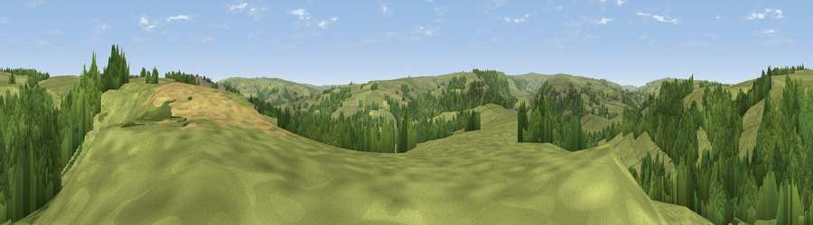

Viewpoint near Egton
#28653 in England · top 61% of its area beats it · near EgtonThe view, rendered

A 360° render of this exact spot computed from the terrain model, tree cover and land cover — summer colours, afternoon light, calibrated against photographs of famous viewpoints. Real trees, hedges and buildings will differ in detail.
The panorama
Grey silhouette: terrain skyline in each direction (720 bearings, Earth curvature and refraction included). Dashed green: skyline with trees (+15 m) and buildings (+8 m) as obstacles. Blue strip: how far the ground is visible on each bearing.
Where the view opens
Wedge length = distance to the farthest visible ground on that bearing (vegetation-aware). Rings at 10, 25 and 50 km.
What fills the view
56% grassland · 40% woodland · 4% cropland
Angular shares of the visible panorama (visual magnitude), not map area. Landscape diversity 0.36 (0–1 Shannon).
Key numbers
More beautiful places nearby
The staircase of upgrades: each row has a higher view potential than everything closer. Driving times are estimates from straight-line distance, calibrated against real road routing — check an actual route before setting out.
| Place | Direction | Drive | Score |
|---|---|---|---|
| Viewpoint near Egton Bridge | SSE · 3 km | ~8 min | 48.9 |
| Viewpoint near Aislaby | ENE · 4 km | ~10 min | 58.0 |
| Viewpoint near Grosmont | ESE · 5 km | ~10 min | 61.3 |
| Viewpoint near Eskdaleside | E · 6 km | ~12 min | 80.7 |
| Viewpoint near Lythe | NNE · 10 km | ~19 min | 81.3 |
| Beacon Hill | N · 11 km | ~22 min | 82.3 |
| Viewpoint near Easington | NNW · 14 km | ~25 min | 86.9 |
| Viewpoint near Easington | NNW · 15 km | ~26 min | 90.2 |
54.44655, -0.77361 · source: screening · position refined by local search. Computed location — check access rights before visiting.